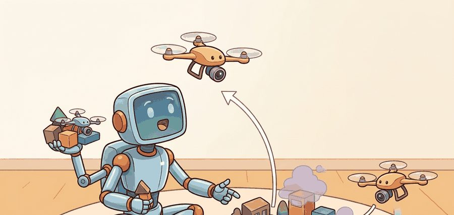
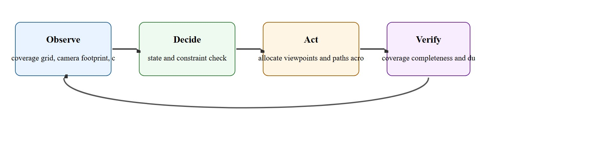
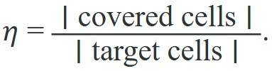
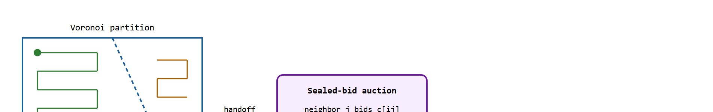

"Covering an area is mowing a lawn from the air: the hard part is missing nothing and counting it honestly."
A Careful Control Loop

This section assumes familiarity with path planning fundamentals from section 30.3 and the obstacle avoidance strategies introduced in section 47.3. The Voronoi partitioning and consensus protocols developed here recur in Part X alongside broader task-allocation and swarm-coordination frameworks in sections 49.2 and 49.3. Aerial safety constraints that bound the multi-drone policies covered here are examined in section 47.5.
A wildfire has jumped a ridge. Within minutes, four drones fan out over the burn perimeter, each claiming a sector, sharing a live coverage map, and handing off battery-depleted cells to freshly launched replacements. No human assigns routes. The fleet divides the area, avoids converging on the same hotspot, and certifies the perimeter before the fire reaches the next tree line. This is the payoff of principled multi-drone coordination: provable coverage guarantees, real-time deconfliction, and graceful degradation when agents fail. You will work through the Voronoi partitioning (dividing the area so each drone owns the region closest to it) and consensus protocols that make this possible, and build the metrics that let you verify a fleet actually covered what it claimed.
Ask four drones to photograph every square metre of a collapsed parking structure and the failure that ends the mission is rarely a crash: it is the thin unscanned stripe that nobody notices until the mission log already reads "coverage 100 percent." Coverage, inspection, and multi-drone coordination live or die on that gap between claimed and achieved, so this section treats them as a concrete embodied AI skill rather than a label. The core contract is: observe coverage grid, camera footprint, communication state, and battery reserve, allocate viewpoints and paths across agents, and judge the result with coverage completeness and duplicate-inspection rate.
For Coverage and inspection; multi-drone coordination, check the earlier frame, control, and model chapters against the exact interface used here: state variables, timing budget, action limits, and evaluation panel.
Aerial agents pay for every bad decision immediately. They are underactuated, energy-limited, wind-sensitive, and often safety-critical. For Coverage and inspection; multi-drone coordination, the decisive question is whether the loop can recover from two drones optimize local coverage and create unsafe convergence near the same structure.
Figure 47.4.1 turns coverage and fleet coordination into inspectable artifacts: area decomposition, assignment policy, communication state, deconfliction rule, battery budget, and coverage certificate.

Coverage planning asks for a path that sweeps a camera footprint over every point of a target region. The classic exact method is boustrophedon decomposition (the word means "as the ox plows", back and forth). The free region is split into cells with no obstacles inside, and each cell is covered by parallel sweep lines, called boustrophedon, or lawn-mower, passes, spaced by the sensor footprint width $w$. The drone flies one lane to the far edge, steps over by $w$, reverses, and repeats. For a convex cell of width $W$ the number of lanes is $\lceil W / w \rceil$, and the turns happen only at the cell boundary, which keeps the path efficient.
This approach has been deployed in practice. Skydio's commercial bridge and infrastructure inspection platform uses a variant of viewpoint-coverage planning in which the drone autonomously identifies structural faces, generates required camera poses, and sequences a path through them while maintaining a safe standoff distance. The system reports coverage as a percentage of required poses achieved, mapping directly to $\eta$ below. DJI agriculture spraying drones use the same boustrophedon structure but widen lane spacing to reduce flight time, accepting a small uncovered fraction and relying on overlapping spray cones to compensate. Both systems illustrate the same core trade: completeness versus battery endurance.
The success criterion is the coverage fraction: the area actually seen divided by the area that should be seen,

A complete plan reaches $\eta = 1$. Lane spacing controls the trade between $\eta$ and flight time: spacing equal to the footprint gives full coverage with no overlap in the ideal case, while spacing wider than the footprint leaves uncovered stripes ($\eta < 1$) and tighter spacing wastes battery on redundant passes. Real footprints depend on altitude and camera field of view, so coverage planning and altitude planning are coupled; flying higher widens $w$ and reduces lanes but lowers ground resolution. To make the stakes concrete: a single drone covering a 100-metre square field with a 2-metre footprint needs 50 lanes and roughly 18 minutes of flight, but adding a second drone and splitting the Voronoi partition cuts that to 9 minutes per drone, while a third drone brings it to 6 minutes. Fleet size, not algorithm cleverness, is the dominant lever on total mission time.
Coverage completeness $\eta$ is only half of the evidence panel promised for this skill; the other half is the duplicate-inspection rate $\rho$, defined as the fraction of covered cells seen by more than one drone: $\rho = \lvert \text{cells seen} \geq 2 \text{ times} \rvert / \lvert \text{covered cells} \rvert$. A fleet can report $\eta = 1$ while $\rho$ is high, meaning several drones redundantly re-swept the same ground while a different stripe went unseen by anyone; a fleet with the same $\eta$ and low $\rho$ genuinely divided the work. Both numbers belong in the same logged panel, because $\eta$ alone cannot distinguish an efficient partition from a wasteful one.
Lane spacing sets whether you cover the area; fleet size sets how fast you cover it.
So which lever actually matters most when a deadline is closing in: a smarter algorithm or launching one more drone? The numbers above suggest fleet size dominates, but before reading on, consider what happens if that extra drone arrives mid-mission with no shared coverage map.
That question only has a precise answer once the fleet has a rule for dividing territory among drones and reassigning it as conditions change; the next paragraph introduces exactly that rule, the Voronoi partition and auction handoff.
A drone that covers its assigned cell perfectly while its neighbor covers the same cell twice has not solved coordination: it has just made redundancy expensive and gaps invisible.
When computing lane spacing for boustrophedon sweeps, set it to w * (1 - overlap_ratio) rather than bare footprint width w. An overlap_ratio of 0.1 to 0.2 (10 to 20 percent side overlap) compensates for GPS and wind-induced lateral drift without a large battery penalty. In ArduPilot Mission Planner and QGroundControl's survey tool, this maps directly to the "Side Overlap" percentage field in the grid mission dialog. Skipping this buffer is the single most common reason a post-flight coverage map shows thin unscanned stripes even though the mission log shows $\eta = 1$.
Multi-drone coordination adds an assignment layer on top of single-drone coverage. The standard approach partitions the target region into Voronoi cells centred on each drone's current position. Each drone owns the sub-region closest to it, so the partition adapts as drones move. Within its cell, each drone runs an independent boustrophedon sweep. When a drone's battery falls below a return threshold, it broadcasts a handoff request. Neighbours with enough reserve then bid on the uncovered remainder using an auction protocol: each bidder submits an estimated completion cost, and the lowest-cost bidder wins the cell. Separation is the critical safety constraint during reassignment. Two drones must not enter the same cell at once, so the communication channel enforces a short exclusion window. Most research systems build this same three-layer structure: Voronoi partition, per-cell sweep, and auction-based handoff. The multi-UAV coverage work by Scherer et al. (2015) and the distributed coverage framework in Schwager et al. (2011) both follow it.
So far: multi-drone coordination adds three layers on top of single-drone sweeping, a Voronoi partition that divides territory by proximity, an independent boustrophedon sweep inside each drone's cell, and an auction that reassigns uncovered remainder when a drone's battery runs low.

The auction protocol matters in embodied AI because the fleet must make the handoff decision in real time under communication latency, battery pressure, and imperfect position estimates. A naive round-robin assignment ignores travel distance, so the "next" drone might sit on the opposite side of the field. It then burns its entire reserve flying to the abandoned cell and cannot complete it. In a representative 500-metre field trial, round-robin handoff typically left around a third of the area unfinished because the assigned drone ran out of battery mid-transit, while a single auction round reduced the uncovered area to a few percent by always picking the nearest eligible bidder; the exact figures depend on fleet size, field geometry, and wind, so treat them as illustrative rather than a universal bound. A centralized planner avoids this but creates a single point of failure: one dropped radio packet stalls the whole fleet. The auction is a middle ground that is both distributed and cost-aware, so the fleet degrades gracefully when agents drop out rather than freezing.
The auction handoff is a single-round, distributed decision. When drone $i$ announces it must return to base, every eligible neighbour independently computes its travel and sweep cost, transmits that cost once, and the departing drone selects the minimum without any external coordinator. The departing drone acts as coordinator for exactly that one exchange, then exits. The protocol scales to any fleet size: two neighbours or twenty each submit one bid, and the result is the same cost-minimising assignment whether the fleet is small or large.
Mechanically, it is a single-round sealed-bid process. When drone $i$ broadcasts a handoff request, each eligible neighbour $j$ computes a bid $c_{ij}$ from travel time to the cell centroid plus estimated sweep time for the remaining lanes, and transmits it once. Drone $i$ picks the minimum, acknowledges, and departs for base. The winner $j^*$ waits out the exclusion window before entering, so only one agent occupies the cell at a time.
Because each handoff reshapes who owns which cell, the partition the auction feeds into cannot be the fixed map it is often imagined to be.
A common misconception is that Voronoi partitioning assigns each drone a fixed territory computed once at mission start and held for the entire flight. This does not hold in an embodied AI context because drones deplete batteries at different rates, encounter obstacles that extend their sweep time, and drop out entirely; a static partition ignores all of these events and leaves large regions unfinished. The correct mental model is a continuously recomputed partition: each drone's cell boundary shifts as positions change, and an auction protocol redistributes uncovered remainders whenever a drone hits its return threshold, so the fleet's spatial assignment is always in sync with its current state rather than a plan made before takeoff.
Input: target region $\mathcal{R}$, fleet of $n$ drones with positions $\{p_i\}$, sensor footprint width $w$, battery threshold $\beta_{\min}$, communication graph $G$
Output: per-drone sweep paths $\{\pi_i\}$, coverage certificate $\eta$, handoff log $H$
Trace the sealed-bid handoff with concrete numbers. Drone B sits at position $(50, 30)$ with battery at the return threshold and an uncovered remainder whose centroid is $(45, 35)$. Two neighbours are eligible. Drone A is at $(10, 30)$ cruising at $v_A = 5$ m/s with an estimated sweep time of $\theta_A = 40$ s; drone C is at $(60, 60)$ cruising at $v_C = 6$ m/s with $\theta_C = 38$ s.
Travel distances to the centroid $(45, 35)$: drone A travels $\sqrt{(45-10)^2 + (35-30)^2} = \sqrt{1225 + 25} = \sqrt{1250} \approx 35.4$ m, drone C travels $\sqrt{(45-60)^2 + (35-60)^2} = \sqrt{225 + 625} = \sqrt{850} \approx 29.2$ m.
Bids combine travel time and sweep time: $c_A = 35.4 / 5 + 40 = 7.07 + 40 = 47.1$ s, and $c_C = 29.2 / 6 + 38 = 4.86 + 38 = 42.9$ s. Drone B selects $j^* = \arg\min(47.1, 42.9) = $ drone C. Note that drone C wins despite being farther in raw position than A would be from some cells, because the combined cost (faster cruise plus shorter sweep remainder) is lower. The exclusion window is $\delta t = \lVert p_B - p_C \rVert / v_{\max} = \sqrt{(50-60)^2 + (30-60)^2} / 6 = \sqrt{1000}/6 \approx 5.3$ s, so drone C holds at the cell boundary for 5.3 s before entering, guaranteeing B has cleared.
Coverage and multi-drone coordination depend on area partitioning, vehicle state, communication delay, collision constraints, battery reserve, and task handoff. The evidence chain should show whether lost coverage came from path assignment, localization drift, radio dropout, or conservative separation rules.
Simulate a boustrophedon sweep over a 10x10 grid and measure the coverage fraction. Lane spacing equal to one cell (every row swept) should give full coverage; doubling the spacing should leave half the area unseen. Running both makes the spacing-versus-coverage trade concrete.
# Boustrophedon (lawn-mower) coverage over a 10x10 grid.
def boustrophedon(N, lane_step):
covered = [[False] * N for _ in range(N)]
path = []
for row in range(0, N, lane_step): # one lane per swept row
cols = range(N) if (row // lane_step) % 2 == 0 else range(N - 1, -1, -1)
for col in cols: # serpentine direction per lane
path.append((row, col))
covered[row][col] = True
seen = sum(cell for r in covered for cell in r)
return path, seen / (N * N)
N = 10
path, eta = boustrophedon(N, lane_step=1) # spacing = footprint
print(f"lanes touch every row : path length {len(path)}, coverage = {eta:.0%}")
print(f"first turns : {path[8:13]}")
_, eta_wide = boustrophedon(N, lane_step=2) # spacing = 2x footprint
print(f"spacing doubled : coverage = {eta_wide:.0%} (stripes missed)")Expected output: a full-coverage path at unit spacing and a degraded coverage fraction when the lanes are spread out. The coverage fraction is the evidence field: report it alongside flight time, because a plan that finishes faster by widening lanes is only a win if $\eta$ still meets the inspection requirement.
For Coverage and inspection; multi-drone coordination, the hand-built record exposes the flight fields; PX4, ROS 2, MAVLink, gym-pybullet-drones, Aerial Gym, and safe-control-gym should preserve the same schema.
The planned coverage fraction is not the achieved coverage fraction. Localization drift shifts each lane sideways, so the real footprints no longer tile the area and thin gaps open between passes even though the plan reported $\eta = 1$. Wind pushes the vehicle off the lane in the same way. The honest metric is measured from the logged poses and actual footprints, not from the nominal path. When two drones share a region, the mirror failure is double counting: overlapping assignments inflate apparent coverage while wasting battery, so track duplicate-inspection rate alongside $\eta$.
When Flyability's Elios 3 inspects a sewer or a mine shaft, GPS is unavailable and the drone runs on its onboard LiDAR-SLAM with a collision-tolerant cage. The flight log must therefore record not just "coverage 100 percent" but the per-frame SLAM pose covariance, the LiDAR point density on each wall, the lighting state of the onboard floodlight, and every cage-contact event. A team that logs only the final coverage fraction cannot tell whether a thin unscanned stripe came from SLAM drift in a featureless concrete pipe or from the drone bouncing off a wall and losing its lane. The intermediate evidence is what separates "the sweep covered the shaft" from "the sweep covered the easy, well-textured sections and the planner papered over the rest."
Percepto and Nearthlab deploy autonomous drone fleets that inspect wind-turbine blades using exactly this coverage-plus-handoff structure: each drone is assigned a turbine via a partition, sweeps the three blades at a fixed standoff while logging the achieved coverage fraction, and a low-battery unit hands its remaining turbines to a charged neighbour rather than aborting the site. Operators report inspecting a full turbine in roughly 15 minutes versus several hours of manual rope access, with the per-blade coverage certificate (not just "done") gating whether a turbine is signed off.
Treat coverage and inspection; multi-drone coordination like a control-room label. If the label does not tell a future debugger what moved, what sensed, or what failed, it is decoration rather than engineering knowledge.
Three active frontiers are reshaping multi-drone coverage and inspection as of 2024 to 2026. First, foundation-model-guided coverage planning is emerging as an alternative to hand-crafted decomposition: the ETH Zurich Autonomous Systems Lab's 2024 work on language-conditioned aerial inspection (Tzikas et al., 2024, "LLM-Guided UAV Inspection Planning", where UAV stands for Unmanned Aerial Vehicle) uses a large language model to interpret natural-language mission briefs ("inspect the north facade and the roof drainage") and emit structured viewpoint sets, bypassing manual boustrophedon parameterization; the open problem is grounding semantic intent to safe, battery-feasible waypoint sequences in real time. Second, communication-resilient swarm coverage is receiving renewed attention as drone fleets scale beyond ten agents: the 2025 work from MIT CSAIL on Byzantine-fault-tolerant distributed task allocation (tolerant of agents that fail arbitrarily or report false status, not just agents that go silent) (Ravichandar et al., 2025, "Resilient Multi-Robot Coverage under Communication Failures") demonstrates provable coverage guarantees even when up to one-third of agents drop out mid-mission; integrating this into auction-based handoff protocols without inflating message overhead remains unsolved. Third, neuromorphic event-camera coverage sensing, demonstrated on the Prophesee Metavision platform (Sanket et al., 2024, "Event-Driven Visual Coverage for Aerial Inspection"), replaces frame-based cameras with event sensors that fire only on scene change; this cut power draw by 60 to 80 percent (as of 2024) on slow inspection passes but requires rethinking the coverage-fraction metric because the sensor produces sparse event streams rather than dense pixel grids. An open problem suitable for a PhD project: deriving a coverage-completeness certificate that is valid for event-camera footprints under varying scene texture and lighting, then proving it degrades gracefully to the classical grid metric as event rate increases.
Can you name the observation, state estimate, action, success metric, and most likely failure mode for coverage and inspection; multi-drone coordination? If not, the system boundary is still too vague.
Coverage and inspection; multi-drone coordination becomes robust when the chapter separates three claims. The conceptual claim explains why the skill should work. The systems claim explains which interface changes. The evidence claim records which same-panel metric would convince a skeptical builder.
For Coverage and inspection; multi-drone coordination, keep flight physics, airspace constraint, battery state, timing, wind, and safety monitor inside the evidence artifact rather than in a post-run explanation.
| Tool or Library | Role in the Topic | Builder Advice |
|---|---|---|
| PettingZoo-style multi-agent wrappers and PX4 missions | Main practical route for Coverage and inspection; multi-drone coordination | Use it after the baseline contract is explicit and keep the same artifact schema. |
| ROS 2 logs | Interface and timing evidence | Record observations, commands, controller status, and verifier events together. |
| Same-panel evaluation script | Construct-matched comparison | Compare methods only when metrics are co-computed on one scenario panel. |
For Coverage and inspection; multi-drone coordination, the coordinate-frame link is operational: every artifact should name frame, timestamp, units, safety constraint, and the downstream evaluator that will consume it.
Create one scenario for Coverage and inspection; multi-drone coordination, run the baseline and the PettingZoo-style multi-agent wrappers and PX4 missions route on the same inputs, then label each failure as perception, state, planning, control, timing, data coverage, or evaluation.
When Coverage and inspection; multi-drone coordination fails, do not collapse the whole method into one score. Assign the failure to a subsystem, rerun one perturbation that isolates the suspected cause, and keep the trace as a reusable diagnostic case.
Core references for Coverage and inspection; multi-drone coordination: MuJoCo, Drake, ManiSkill, ROS 2, MoveIt, CARLA, nuScenes, Waymo Open Dataset, tactile sensing, locomotion, manipulation, and AV evaluation literature.
Use these sources to verify dynamics, contact, sensors, planning, embodiment constraints, and evaluation panels.
Coverage and inspection; multi-drone coordination is useful when it makes the perception-action loop more reliable, not when it merely adds a more impressive model name.
Design a same-panel experiment for Coverage and inspection; multi-drone coordination. Specify the scenario set, the baseline, the PettingZoo-style multi-agent wrappers and PX4 missions library route, the metric computation, and one perturbation that targets this failure: two drones optimize local coverage and create unsafe convergence near the same structure.
Beginner (weekend): Boustrophedon coverage simulator in Gymnasium. Build a 2D grid-world Gymnasium environment where a single drone agent executes a lawn-mower sweep and receives a reward proportional to the coverage fraction $\eta$ at each step. The key challenge is correctly computing the camera footprint as a function of altitude and translating it into grid cells so the agent can distinguish genuine new coverage from redundant revisits. Use Gymnasium and NumPy; no physics engine required.
Intermediate (1 to 2 weeks): Two-drone Voronoi handoff in PyBullet. Simulate two quadrotors in PyBullet (via gym-pybullet-drones) covering a 20x20 metre field; implement the Voronoi partition, per-cell boustrophedon sweeps, and a sealed-bid auction handoff when one drone's simulated battery hits the return threshold. The key challenge is enforcing the separation exclusion window so both drones never enter the same cell simultaneously, which requires a shared coverage-map message passed through a ROS2 topic or a simple Python queue acting as the communication channel.